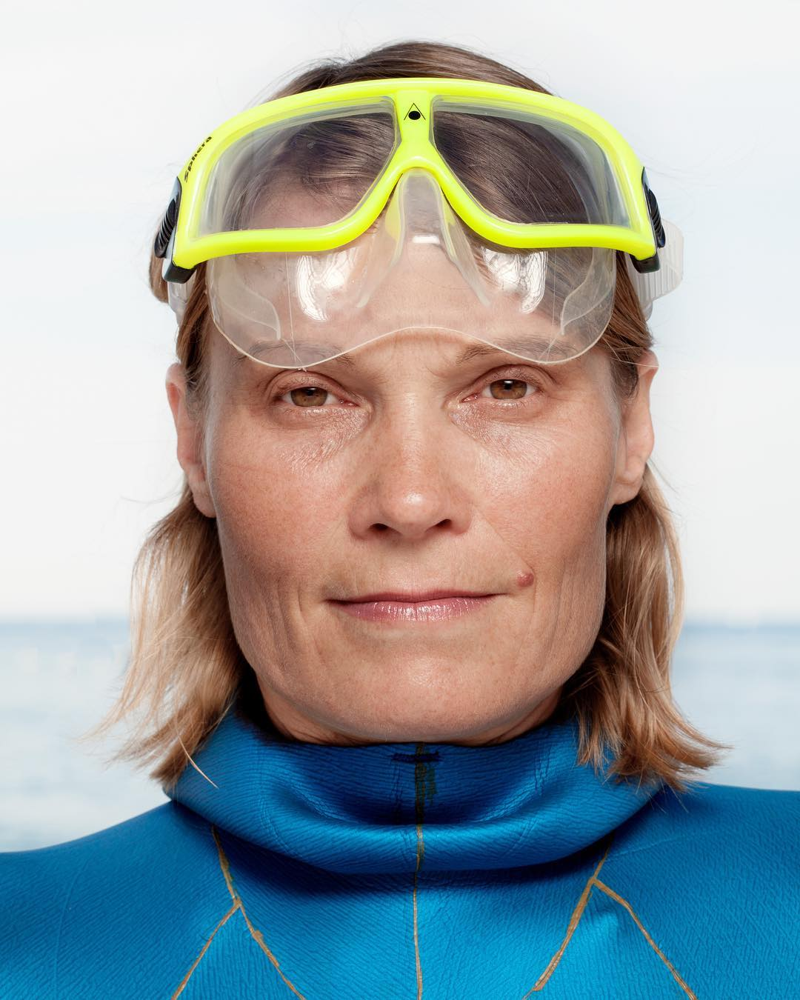

Natalia Molchanova
Possibly the world’s greatest freediver

“Free diving is not only a sport, it’s a way to understand who we are.” – Natalia Molchanova
Natalia Molchanova was the world's most decorated free diver ever, holding 41 world records at the time of her presumed death and winning 23 gold medals during her lengthy career.
About Natalia Molchanova
- 1962 - Born in Ufa, Bashkortostan, then part of the Soviet Union
- 2002 - At age 40, Molchanova resumed training after being retired from swimming, and shifted from swimming to free diving.
- 2003 - Molchanova attended her first free diving competition in Russian championships in Moscow, where she set a national record.
- 2007 - At the Freediving World Championships in Maribor, Slovenia, Mochanova's winning time in the static discipline was better than the winning male gold medal.
- 2009 - Mochanova became the first woman to pass 100 meters diving with constant weight, in a dive to 101 meters in Sharm el Sheikh, Egypt.
Molchanova set multiple world records over the years up until her disappearance in 2015.
Disappearance
- 2 August 2015 - Molchanova was reported missing after giving a private lesson dive near Formentera, Spain. Initial rescue and recovery efforts were unsuccessful.
- 4 August 2015 - Search and rescue efforts continued.
- 5 August 2015 - Search efforts were abandoned and Molchanova was presumed dead.
The Spanish Civil Code provides that a missing person by shipwreck or amid a dangerous activity shall be declared deceased in absentia three months after a missing report